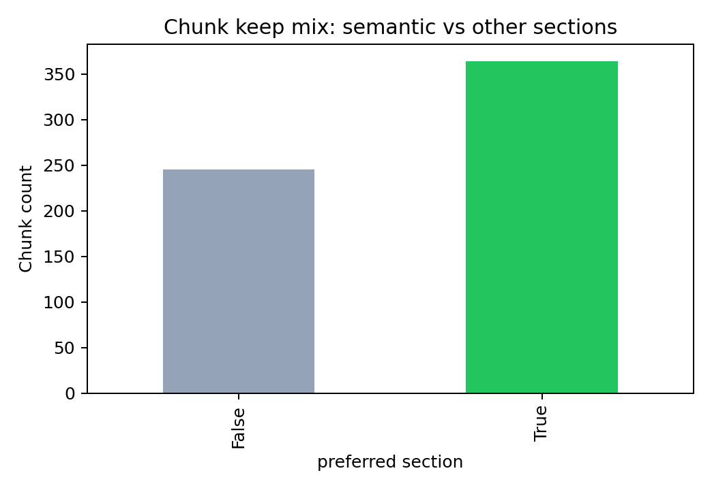

This report shows ingestion status, extraction quality indicators, detected sections, and chunking diagnostics for the curated benchmark corpus.



Status: extracted | Sections: 15 | Chars: 49226
PDF: /Users/mariadjuric/FindMyArxivPaper/data/raw/pdfs/2603.16528v1.pdf
We explore a hybrid expansion of the disturbing function in planetary dynamics that combines elements of the classical Laplace and Legendre developments. This formulation retains the structure of the Laplace expansion, but expresses the inverse of the mutual distance as a series whose terms keep an exact dependence on both the eccentricity and the semi-major axis ratio. We use it to construct the first-order secular Hamiltonian of the planar 3-body problem, relevant for modeling the long-term ev
In planetary systems, the disturbing function plays a central role in understanding the long-term dynamical evolution of planetary orbits. It encodes the gravitational interactions between planets and provides the foundation for studying both secular 1 and resonant dynamics. Expanding the disturbing function as a power series in the orbital elements has long been a key focus in celestial mechanics and fundamental to constructing perturbative models of planetary motion. In the context of the 3-bo
In this work, we explored an alternative expansion of the disturbing function for the planar planetary 3-body problem. This formulation, referred to as the Laplace–Legendre expansion, combines elements from both the classical Laplace and Legendre series. It uses the same series structure as the Laplace formulation, but differs in that each term of the expansion retains its full dependence in both the semi-major axis ratio and eccentricity. The method provides, for example, an alternative means t
Aya Alnajjarine1, Jacques Laskar1 and Federico Mogavero[2,1] 1LTE, CNRS, Observatoire de Paris, Universit´e PSL, Sorbonne Universit´e, 77 Avenue Denfert-Rochereau, 75014 Paris, France. 2Dipartimento di Matematica “Tullio Levi-Civita”, Universita degli Studi di Padova, Via Trieste 63, 35121 Padova, Italy. Corresponding author(s). E-mail(s): aya.alnajjarine@obspm.fr; jacques.laskar@obspm.fr; Contributing authors: mogavero@math.unipd.it;
We consider a 3-body system consisting of a central star of mass m0 and two planets of masses m1 and m2, with mi ≪ m0. Using canonical heliocentric variables (Poincar´e 1896; Laskar 1991), the Hamiltonian governing the Newtonian dynamics reads ==> picture [295 x 44] intentionally omitted <== where ri are the heliocentric position vectors of the planets, r˜i are their conjugate barycentric momenta, G the gravitational constant, µi = G(m0 + mi), and βi = m0mi/(m0 + mi). The indices i = 1, 2 refer
We denote the mutual distance between the planets as ∆= ∥r1 − r2∥. Its inverse can be expanded using Legendre polynomials as ==> picture [252 x 29] intentionally omitted <== where S is the angle between the position vectors r1 and r2, and Pn denotes the Legendre polynomial of degree n. Following the formalism of (Laskar and Bou´e 2010), this expression can be transformed in to a Fourier series in the mean anomalies Mi and written as a power series in the semi-major axis ratio α = a1/a2, ==> pict
Laplace-Legendre expansion of the planar planetary Hamiltonian 5 Conclusion In this work, we explored an alternative expansion of the disturbing function for the planar planetary 3-body problem. This formulation, referred to as the Laplace–Legendre expansion, combines elements from both the classical Laplace and Legendre series. It uses the same series structure as the Laplace formulation, but differs in that each te
of the Laplace expansion. In the last two regimes, combining the Laplace and Legendre approaches does not necessarily lead to an expansion that outperforms both classical methods at the same time. Instead, the Laplace–Legendre expansion tends to match the method that is best suited to each limit. In the extremes of these limits (namely, when α ≪ 1 and e is large, or when e ∼ 0 while α is large), the new expansion may
as two limiting regimes: nearly circular, compact systems with e = 0.01 and α ∈{0.4, 0.5}, and hierarchical, highly eccentric systems with e = 0.6 and α ∈{0.001, 0.01}. The results show that the Laplace–Legendre expansion performs best in regimes where both e and α are small (e.g., e = 0.01, α = 0.01). It can also outperform both classical methods in an intermediate regime, where neither parameter is particularly smaLaplace-Legendre expansion of the planar planetary Hamiltonian 1 Introduction In planetary systems, the disturbing function plays a central role in understanding the long-term dynamical evolution of planetary orbits. It encodes the gravitational interactions between planets and provides the foundation for studying both secular 1 and resonant dynamics. Expanding the disturbing function as a power series in the orbital
Status: extracted | Sections: 11 | Chars: 28970
PDF: /Users/mariadjuric/FindMyArxivPaper/data/raw/pdfs/2601.08019v1.pdf
Wisdom-Holman (WH) integrators are symplectic operator-splitting methods widely used for longterm N-body simulations of planetary systems. Most implementations use either Jacobi coordinates or democratic heliocentric coordinates (DHC) for the Hamiltonian splitting, resulting in slightly different algorithms. In this paper we report results from numerical experiments, which show that integrations of the Solar System using DHC coordinates with typical timesteps of a few days suppress instabilities
Numerical integrations of the Solar System, have a long history (see e.g. W. J. Eckert et al. 1951 for one of the first simulations of this kind, and J. Laskar 2013 for a historical summary of the field). Although different authors use different numerical algorithms, most modern long-term simulations use symplectic integrators that make use of the Wisdom-Holman splitting (J. L. Wisdom 1981; J. Wisdom & M. Holman 1991; H. Kinoshita et al. 1991). Various variations of the Wisdom-Holman (WH) algori
Our results from Sec. 2 show clear evidence that Jacobi coordinates perform better than DHC in Solar System integrations. This is because when using Jacobi coordinates for the Hamiltonian splitting, Mercury’s motion is decomposed in to a Keplerian step on a two-body orbit around the Sun, and an interaction step with the other planets. In the limit where Mercury has a high eccentricity, the Kepler solver still correctly solves for the Keplerian motion around the Sun-Mercury barycenter for arbitra
Different instability rates of the Solar System have been reported in the literature, ranging from ∼ 0. 1% to 1% (J. Laskar & M. Gastineau 2009; R. E. Zeebe 2015; D. S. Abbot et al. 2021; D. S. Abbot et al. 2023; N. A. Kaib & S. N. Raymond 2025). In this paper we traced this discrepancy back to the coordinate system used in the Hamiltonian splitting of the Wisdom-Holman integrator. We showed that simulations using democratic heliocentric coordinates (DHC) require a significantly smaller timestep
Hanno Re in,[1, 2, 3] Kavi Dey,4 and Daniel Tamayo 4 1 Dept. of Physical and Environmental Sciences, University of Toron to at Scarborough, Toron to, Ontario, M1C 1A4, Canada 2 Dept. of Physics, University of Toron to, Toron to, Ontario, M5S 3H4, Canada 3 Dept. of Astronomy and Astrophysics, University of Toron to, Toron to, Ontario, M5S 3H4, Canada 4 Dept. of Physics, Harvey Mudd College, 301 Platt Blvd., Claremont 91711, USA
All simulations were performed with the REBOUND package (H. Re in & S. F. Liu 2012). REBOUND includes several integrators, in particular the WH integrator WHFast (H. Re in & D. Tamayo 2015) which allows us to choose the coordinate system for the Hamiltonian splitting. We also run simulations with the WHFast512 integrator (P. Javaheri et al. 2023), which only supports DHC. We include comparisons with WHFast512 because it does not reuse any code from WHFast, and can therefore be seen as an indepen
2009; G. Brown & H. Re in 2023). We therefore expect a significant effect on the stability rate from such numerical effects. We note that the artificial numerical precession has the same direction as the physical GR precession, and that the breakdown of the WH integrator with DHC occurs when the timestep becomes comparable to the pericenter-crossing timescale, dt ≳ Tf / 4. We thus confirm our earlier claim that this
Status: extracted | Sections: 18 | Chars: 102185
PDF: /Users/mariadjuric/FindMyArxivPaper/data/raw/pdfs/2601.01110v2.pdf
Tidal structures around globular clusters provide valuable insights in to cluster evolution and the hierarchical assembly of the Milky Way. Using wide-field imaging data from the DESI Legacy Survey combined with a color-magnitude matched-filter technique, we performed a systematic analysis of extratidal features in 28 Galactic globular clusters of likely extragalactic orig in, representing the largest homogeneous sample examined in this context to date. The clusters display diverse morphologies:
Globular clusters (GCs) are among the oldest stellar systems in the Universe, and they serve as valuable tracers of the formation and assembly history of their host galaxies. In the hierarchical framework of Lambda cold dark matter cosmology model (Planck Collaboration et al. 2016), many Galactic GCs are thought to have been accreted from satellite galaxies during past merger events (Searle & Zinn 1978; Bullock & Johnston 2005; Kruijssen et al. 2020). This idea is supported by the discovery of p
To detect potential extratidal structures around each globular cluster, we employed the matched filtering technique developed by Rockosi et al. (2002), which enhances the contrast between cluster members and field stars in CMD space and is effective for detecting low-surface-brightness structures. This technique has been successfully applied in several subsequent studies of tidal features around star clusters (e.g., Chun et al. 2010; Jordi & Grebel 2010; Navarrete et al. 2017; Carballo-Bello et
In this study, we conducted a systematic investigation of the extratidal structures associated with Galactic GCs of likely extragalactic orig in, aiming to explore their formation mechanisms and the key physical factors driving their morphological diversity. Using a homogeneous dataset from the DESI Legacy Imaging Surveys and a uniform matched-filtering procedure, we identified and morphologically classified the tidal features of our cluster sample. We then explored the connections between extra
Shouzhi Wang1[,][ 2][,][ 3], Jundan Nie[3,][⋆], Biwei Jiang1[,][ 2], Hao Tian3, Chao Liu3, and Ying-Hua Zhang3[,][ 4] - 1 Institute for Frontiers in Astronomy and Astrophysics, Beijing Normal University, Beijing 102206, People’s Republic of China - 2 School of Physics and Astronomy, Beijing Normal University, Beijing 100875, People’s Republic of China - 3 National Astronomical Observatories, Chinese Academy of Sciences, Beijing 100101, People’s Republic of China e-mail: jdnie@nao.cas.cn - 4 Scho
We began by constructing an initial list of candidate GCs in the Galaxy with probable extragalactic origins based on consistent classifications in both Massari et al. (2019, 2025 update) and Forbes (2020). In the original 2019 version, Massari et al. (2019) classified clusters primarily according to their positions in integrals-of-motion (IOM) space derived from Gaia DR2 astrometry, with the age-metallicity relation serving as a secondary criterion. In the 2025 update, this classification was re
Exploring the formation mechanisms of tidal structures in globular clusters of extragalactic origin 3.Matched filter method To detect potential extratidal structures around each globular cluster, we employed the matched filtering technique developed by Rockosi et al. (2002), which enhances the contrast between cluster members and field stars in CMD space and is effective for detecting low-surface-brightness structure
in any sky bin ( i, j ) in color-magnitude can be expressed as: n stars,( i, j ) = α f cl,( i, j ) + n bg,( i, j ). (1) Here, f cl represents the normalized color-magnitude distribution of cluster members and serves as the cluster template in the matched-filter method, while n bg denotes the background number density distribution in the same bin, which is used as the corresponding background template. The parameter α
(when applied) and the cluster’s tidal radius (from Harris (1996), 2010 edition). In addition, to reduce field-star contamination and obta in a clean cluster CMD template f cl, we selected stars with −0.5 < g − r < 1.0 and 14 < r < 23 mag, and subtracted a local background derived from a comparing field in an annular region centered on the cluster, typically located between about 1[◦] and 1.5[◦] from the cluster cent
located at different position angles far away from the cluster, each more than 2[◦] from the cluster center. The Hess diagrams of these regions were then averaged to produce a uniform global background model (see the lower panels of each Hess diagram in Fig. 1). Finally, the matched-filter procedure yields the quantity α, which represents the number of stars that pass the matched filter with in a given spatial bin. U
Status: extracted | Sections: 23 | Chars: 113433
PDF: /Users/mariadjuric/FindMyArxivPaper/data/raw/pdfs/2603.29502v1.pdf
Eugene Vasiliev,1 Anja Feldmeier-Krause,2 and Mattia C. Sormani3 1 University of Surrey, Guildford GU2 7XH, UK 2 University of Vienna, T¨urkenschanzstraße 17, 1180 Vienna, Austria 3 Como Lake centre for AstroPhysics (CLAP), DiSAT, Universita dell’Insubria, Via Valleggio 11, 22100 Como, Italy
We present a method for constructing dynamical models of stellar systems described by distribution functions and constrained by discrete-kinematic data. We implement various improvements compared to earlier applications of this approach, demonstrating with several examples that it can deliver meaningful constraints on the mass distribution even in situations when the density profile of tracers and the selection function of the kinematic catalogue are unknown. We then apply this method to the Mil
The centre of our Galaxy contains two exciting objects: the supermassive black hole (SMBH) Sgr A [⋆] of mass M• ≈ 4. 3 × 106 M⊙ (GRAVITY Collaboration 2022) and the surrounding nuclear star cluster (NSC). The NSC, in turn, is embedded in the nuclear stellar disc (NSD), which extends up to a couple hundred pc (see, e.g., Schultheis et al. 2025 for a review), and at even larger distances (a few kpc), by the Galactic bar, then the Galactic stellar disc and halo, and finally the rest of the known Un
Several approaches have been used for modelling the Milky Way NSC and NSD in the past. Most studies relied on the Jeans equations, either spherical (e.g., Sch¨odel et al. 2009; Do et al. 2013b; Chatzopoulos et al. 2015a; Fritz et al. 2016) or axisymmetric (Feldmeier et al. 2014; Chatzopoulos et al. 2015a; Sormani et al. 2020; Feldmeier-Krause et al. 2025). These are easy to underst and and fast to run, but have a few fundamental limitations. First, Jeans equations typically only use the first tw
To validate our dynamical modelling procedure, we performed a test run on a mock dataset having the same spatial footprint as the observational data described in Section 4. We created a fiducial model with parameters given in Table 1, and for each star in the observational sample, assigned its missing Z coordinate from the conditional distribution p ( Z ) = ρ ( X, Y, Z ) / Σ( X, Y ), and all velocity components that have been actually measured from the conditional distribution f� v | x � compose
Feldmeier-Krause et al. (2025) compiled a catalogue of V LOS and PM measurements from several sources, which we use as a starting point for the present study and apply various additional cuts described below. The spectroscopic dataset is taken from several sources. Feldmeier-Krause et al. (2017a) and FeldmeierKrause et al. (2020) observed spectra of ∼ 700 stars each with KMOS/VLT (Sharples et al. 2013; Davies et al. 2013, R ∼ 4000) out to 127 [′′] ( ∼ 5 pc). Xu et al. (in prep.) observed ∼ 900 s
Distribution function-based modelling of discrete kinematic datasets, in application to the Milky Way nuclear star cluster 2.1.Overview of methods Several approaches have been used for modelling the Milky Way NSC and NSD in the past. Most studies relied on the Jeans equations, either spherical (e.g., Sch¨odel et al. 2009; Do et al. 2013b; Chatzopoulos et al. 2015a; Fritz et al. 2016) or axisymmetric (Feldmeier et al.
been applied to the NSC. Second, a solution to the Jeans equations is not guaranteed to correspond to a physically valid (nonnegative) DF. This is rarely a concern for most stellar systems, but when the potential is dominated by a central point mass, the constraints imposed by the socalled “cusp slope–velocity anisotropy theorem” (An & Evans 2006) exclude a considerable part of the parameter space as unphysical. This
kinematic sample) to solve the equations for the velocity moments. At the other end of the spectrum of dynamical modelling methods (in terms of complexity and computational cost) is the Schwarzschild (1979) orbitsuperposition approach, in which the DF is modelled as a weighted sum of a large number of orbits (essentially, Dirac’s δ -functions in the space of integrals of motion). A triaxial orbit-based model of the N
is represented by a weighted sum of ⊓ -shaped building blocks in the E, L2 space, and the model fitting could be done using individual velocity measurements and evaluating the likelihood of each star against the DF of each building block. However, due to peculiarities of kinematic catalogues, Magorrian (2019) had to seriously engage with the selection function, as discussed further down in Section 3.1. In his approac
Status: extracted | Sections: 41 | Chars: 140492
PDF: /Users/mariadjuric/FindMyArxivPaper/data/raw/pdfs/2603.09880v1.pdf
The advent of high-precision Gaia parallaxes for Milky Way Cepheids enables percentlevel calibration of the local distance ladder and H 0. We revisit the Milky Way Cepheid calibration from Gaia EDR3 parallaxes using a fully forward-modelled Bayesian framework that simultaneously infers the period–luminosity relation, the Gaia parallax zero-point offset, and individual stellar distances while explicitly incorporating the disk geometry of the Galaxy through the distance prior and the selection fun
The ∼ 5 σ discrepancy between local distance-ladder and cosmic microwave background (CMB)-calibrated inferences of H 0, known as the Hubble tension, is one of the most pressing problems in cosmology (e.g. Riess et al. 2022a; Planck Collaboration et al. 2020; Louis et al. 2025; Camphuis et al. 2025; Freedman et al. 2025; Di Valentino et al. 2025). While there are many routes to local H 0, which contribute to the overall tension (see H0DN Collaboration et al. 2025 for their ⋆ richard.stiskalek@phy
We use the MW Cepheids compiled by R21, with HST photometry in the F555W, F814W, and F160W bands and Gaia EDR3 parallaxes (Gaia Collaboration et al. 2021). Of the 75 Cepheids in the R21 catalogue, seven lack Gaia EDR3 parallaxes that pass the RUWE or GOF quality cuts (CY Aur, DL Cas, RW Cam, SV Per, SY Nor, RX Cam, and U Aql) and are excluded. We further exclude S Vul and SV Vul, which were flagged as possible outliers in R21. Both exhibit significant secular period evolution, and as the longest
The fiducial inference combines the C22 and C27 samples with the disk distance prior (Eq. 2) and selection modelling applied to both MW campaigns; the LMC and N4258 are optionally included as additional geometric calibrators. The term “MW Cepheids” denotes the joint C22 + C27 sample; individual campaign results appear in Appendix B. Subsequent variants omit the selection modelling or replace the disk prior with a uniform-in-volume prior. The R21 χ2 method applied to the MW Cepheids yields result
We have presented a Bayesian forward model of the MW Cepheid population that jointly infers the period–luminosity relation parameters, the Gaia parallax zero-point offset, and the intrinsic population distributions, while marginalising over the distances and latent true periods and metallicities of individual Cepheids and explicitly accounting for the sample selection function and the disk geometry of the MW. Combined with geometric calibration of the LMC and N4258, our fiducial model yields a p
The C22 and C27 data used in this work were extracted from table 1 of R22. The SH0ES data are available at github.com/PantheonPlusSH0ES/DataRelease. The code and all other data will be made available on reasonable request to the authors.
Forward-modelling Milky Way Cepheids: selection effects and physical priors in the Gaia-HST calibration 1 INTRODUCTION The ∼ 5 σ discrepancy between local distance-ladder and cosmic microwave background (CMB)-calibrated inferences of H 0, known as the Hubble tension, is one of the most pressing problems in cosmology (e.g. Riess et al. 2022a; Planck Collaboration et al. 2020; Louis et al. 2025; Camphuis et al. 2025; F
Forward-modelling Milky Way Cepheids: selection effects and physical priors in the Gaia-HST calibration 3 BAYESIAN FORWARD MODEL We construct a Bayesian forward model to jointly infer the period–luminosity relation parameters, the parallax zeropoint offset δϖ, and per-star distances, broadly following the forward-modelling framework of Stiskalek et al. (2026). Our approach differs from that of R21, who optimise in pa
Forward-modelling Milky Way Cepheids: selection effects and physical priors in the Gaia-HST calibration 4.3 Model validation To verify that the forward model reproduces the observed data, we perform a posterior predictive check (PPC), shown in Fig. 6. For each of 1000 thinned posterior draws, we generate mock MW Cepheids by sampling distances from the disk prior and periods and metallicities from the inferred populat
Forward-modelling Milky Way Cepheids: selection effects and physical priors in the Gaia-HST calibration 6 CONCLUSION We have presented a Bayesian forward model of the MW Cepheid population that jointly infers the period–luminosity relation parameters, the Gaia parallax zero-point offset, and the intrinsic population distributions, while marginalising over the distances and latent true periods and metallicities of ind
Status: extracted | Sections: 19 | Chars: 65881
PDF: /Users/mariadjuric/FindMyArxivPaper/data/raw/pdfs/2603.04358v1.pdf
The large population of broad-line Active Galactic Nuclei (AGN) observed with the James Webb Space Telescope (JWST) at z ≳ 4 opens a new window on to the black hole–galaxy connection in the first Gyr of cosmic history. We use the JADES survey-level dataset and develop a forward-modeling Bayesian framework that explicitly accounts for broad H α detectability, ensuring that selection effects are incorporated in to the likelihood function. With this approach, we constra in the black hole–stellar ma
Supermassive black holes (SMBHs), with masses ranging from 106 to over 1010 M⊙, are ubiquitously found at the centers of massive galaxies (Kormendy & Ho 2013; Reines & Volonteri 2015) both in the local and high- z Universe. A wealth of observational evidence has established that the growth of SMBHs is closely linked to the formation and evolution of their host galaxies. This co-evolution is supported by tight empirical correlations between SMBH mass and large-scale galactic properties such as st
In this section, we describe the procedure adopted to generate synthetic H α spectra and to assess the detectability of AGN signatures under varying physical conditions. Throughout this analysis, we consider only unobscured, broad-line (type 1) AGN, excluding sources where the broad component is hidden by nuclear obscuration. Our approach is based on a forward-modeling framework in which the emission-line profiles are derived analytically from the underlying galaxy and BH properties, allowing us
In this section, we present the results of our detectability analysis and the inferred M BH– M⋆ relation at z ≳ 4. We beg in by examining how the observability of broad H α components varies across the parameter space of black hole and galaxy properties. We then use these results to test the biases on the M BH– M⋆ diagram introduced by NIRSpec observations. Finally, we incorporate the detectability maps in to a truncated-likelihood framework when fitting the M BH– M⋆ relation. This approach allo
Motivated by the larger intrinsic dispersion we infer at z ∼ 6, we discuss the physical mechanisms that broaden the M BH– M⋆ relation at early times. The variance of the relation is expected to arise from three ma in contributions: stochastic BH accretion and feedback, the hierarchical assembly of galaxies through mergers, and any residual diver- Article number, page 7 of 12 A&A proofs: manuscript no. ma in ==> picture [560 x 346] intentionally omitted <== Fig. 4. Black hole–host galaxy scaling
We have presented a statistically rigorous determination of the M BH– M⋆ relation at z ≳ 4, based on a sample of broadline AGN from the JADES survey and a selection-aware modeling framework. By combining detectability maps with a truncated-likelihood MCMC fit, we explicitly account for the non-uniform probability of detecting broad H α emission. This approach allows us to mitigate selection effects that can bias black hole mass estimates at fixed host stellar mass, leading to a more reliable cha
A Selection Aware View of Black Hole-Galaxy Coevolution at High Redshift 2.1.Mock Hα spectra We generated mock emission-line spectra centered on the H α line (6563 Å) following a procedure similar to the one outlined in Chakraborty et al. (2025, see their Sec. 5). We model both the narrow and the broad component as Gaussian functions. The physical properties of the two components were computed directly from four inpu
inference is not biased by truncation effects. Posterior sampling is performed using the emcee (Foreman-Mackey et al. 2013) MCMC sampler with 32 walkers and 20,000 steps per walker. The first 5,000 steps are discarded as burn-in. We adopt a combination of hard bounds and Gaussian priors on the model parameters. Specifically, the parameters are restricted to the ranges α ∈ [ − 12, 0], β ∈ [ − 4, 4], and σ int ∈ [0. 2,
A Selection Aware View of Black Hole-Galaxy Coevolution at High Redshift 3.1.Detectability mapping Fig. 2 shows the detectability map of broad H α emission as a function of black hole mass and stellar mass. Each cell of the grid represents the average detection rate over 100 realizations with randomly sampled values of SFR and λ Edd with in the ranges defined in Sec. 2. The color scale encodes the detection probabili
Fig. 2. Detectability of broad H α emission across the M⋆ – M BH parameter space, for two different noise levels. Each pixel represents the average detection rate across 100 realizations with randomly sampled SFR and λ Edd. The color scale ranges from 0% (black) to 100% (yellow). The right panel assumes the lowest noise level (1 × the RMS of JADES source 73488), while the left panel corresponds to the highest noise l
Status: extracted | Sections: 18 | Chars: 46969
PDF: /Users/mariadjuric/FindMyArxivPaper/data/raw/pdfs/2602.23127v1.pdf
Galaxy models comprising several components (including dark matter) that are bound by the self-consistently generated gravitational field are readily constructed from distribution functions (DFs) that are analytic functions of the action integrals J. We expla in why such models have unphysical velocity distributions unless the DFs of hot components satisfy certa in conditions as Jφ → 0. We show how DFs for both isotropic and radially biased spherical systems can be constructed with specified f (
The extent and quality of the data that are available for both our Galaxy and external galaxies has increased enormously in the last few years. In the case of the Milky Way, the Gaia data releases (Gaia Collaboration & Brown 2018; Gaia Collaboration et al. 2023) and data released by several spectroscopic surveys (Steinmetz et al. 2020; Deng et al. 2012; Abdurro’uf et al. 2022; Buder et al. 2025) have enabled us to study the chemodynamics of our archetypal Galaxy in extraordinary detail. Meanwhil
At the beginning of this section we saw that ∂f/∂vφ will not vanish with vφ unless certa in products of derivatives of f and of the actions cancel nicely. We further saw that for such cancellation to occur the partial derivatives of f as Jφ → 0 must satisfy ∂f/∂Jr = 21[∂f/∂J][φ][at][J][z][less][than] a critical value and ∂f/∂Jz = ∂f/∂Jφ at lager Jz. These conditions should ensure that ∂f/∂vφ vanishes by virtue of a relation that we inferred between derivatives of the actions with respect to vφ.
Although an axisymmetric model of a stellar system can be derived from any non-negative and normalisable function f (J), the model will be unphysical unless f satisfies the conditions of equation (16). These conditions serve both to ensure that histograms of vφ do not have cusps at vφ = 0 and to ensure that velocity distribution becomes appropriately symmetric near the centre and near the potential’s symmetry axis. In Section 3 we saw the need for non-trivial cancellations if ∂f/∂vφ is to vanish
The computations were performed by C++ code linked to the agamab library (Binney et al. 2025), which can be downloaded from https://github.com/binneyox/AGAMAb.
Binney (2014) proposed generating anisotropic models by replacing H(J) as the argument of the DF f (H) of an ergodic model by a similar function of J in which its components Ji receive different weights: weighting an action more heavily depopulates orbits with large values of that action relative to the ergodic model. For example, decreasing the weighting of Jr induces a radial bias in the model, while weighting Jz more strongly than Jφ flattens the model. Posti et al. (2015) showed that DFs tha
Distribution functions for spheroids 1 INTRODUCTION The extent and quality of the data that are available for both our Galaxy and external galaxies has increased enormously in the last few years. In the case of the Milky Way, the Gaia data releases (Gaia Collaboration & Brown 2018; Gaia Collaboration et al. 2023) and data released by several spectroscopic surveys (Steinmetz et al. 2020; Deng et al. 2012; Abdurro’uf e
to manage these limitations is to model them with the aid of dynamical models. In its purest form this process involves fitting a model of sufficient sophistication to the data, errors, biases and all. The more advanced the data are, the more sophisticated must be the models fitted. For example, if the data suffice only to constra in the first three moments of the distribution function (DF), namely the luminosity den
populations with in the Milky Way, so models need to furnish predictions for several populations that are confined by a common gravitational potential. Such models can be constructed in several ways. A popular approach is N-body modelling. Unless several million particles are employed, Poisson noise in the gravitational potential is unacceptably large (e.g. Aumer et al. 2016), so this is inevitably an expensive techn
2017). Another popular, and slightly less labour-intensive approach to galaxy modelling is Schwarzschild’s technique (Schwarzschild 1979), which has been applied to significant numbers of galaxies in the Sauron (Emsellem et al. 2007), califa (S´anchez et al. 2012), atlas 3D (Cappellari 2011), sami (Bryant et al. 2012), and MANGA (Bundy et al. 2015) surveys (e.g. van den Bosch et al. 2008; Cappellari 2016; Zhu et al.
Status: extracted | Sections: 13 | Chars: 60260
PDF: /Users/mariadjuric/FindMyArxivPaper/data/raw/pdfs/2602.21171v1.pdf
Scattering of stars by interstellar clouds or massive clumps increases the stellar velocity dispersion and promotes a radial disk profile that is exponential. Here we show that such scattering reaches a steadystate distribution function of stellar eccentricity, after which eccentricity increases and decreases occur at equal rates. The implication is that clump/cloud scattering recircularizes eccentric stellar orbits, keeping the stellar velocity dispersion in a limited range. This re-circulariza
The radial profiles of galaxy stellar disks are approximately exponential for several scale lengths in the ma in parts, with either a continuation (Type I), a downturn (Type II), or an upturn (Type III) to a further exponential over many more scale lengths in the outer parts (Freeman 1970; Erw in et al. 2005; Pohlen & Trujillo 2006; Erw in et al. 2008; Meert et al. 2015). Exponential profiles are observed in both spirals and dwarfs (Herrmann et al. 2013), whether barred or non-barred (Hunter & E
In this paper we presented a set of numerical experiments showing how gravitational scattering by interstellar clouds leads to the formation of exponential stellar disks. Cloud-star scattering has long been known to heat a stellar disk, increasing the eccentricities of stars (Spitzer & Schwarzschild 1951; Sun et al. 2025). It is one of several possible heating mechanisms (Garzon et al. 2024). Cloud scattering stalls once stars move off the th in cloud layer, so there is a natural regulation of t
Curtis Struck,1 Bruce G. Elmegreen,2 and Elena D’Onghia[3, 4] 1 Iowa State University 2 Retired, Katonah, NY 10536 3 Department of Physics, University of Wiscons in-Madison, Madison, WI 53706, USA 4 Department of Astronomy, University of Wiscons in-Madison, Madison, WI 53706, USA
The results presented below are based on test particle model scattering disks, which are modified versions of the code used in Elmegreen & Struck (2013) and subsequent papers in this series. The disk is initialized with 9759 test particles placed on circular orbits in the central x-y plane in a rigid halo gravitational potential. The initial surface density is constant out to a radius of 8.0 units to highlight the subsequent development of the exponential. The test particles are then given rando
We use dimensionless units, specifically we take, H = 1, and GMH = 1. 0, then VH2[=] [GM][H][/H][=][1,][and] [T][H][=] H/VH = 1. As per previous papers in the series we can adopt representative scalings for a normal and a dwarf type disk. For the normal disk these are: H = 2 kpc, VH = 50 km s [−]1, T = 40 Myr, and MH = 5. 0 × 109 M⊙. This gives rotation periods at R = 2 and 10 kpc of 250 and 1460 Myr, respectively. (The addition of a massive disk, bulge or bar component could increase rotation v
Scattering, Migration, Re-circularization and Relaxation to Build Out Galaxy Disks with Exponential Profiles 2.1.Numerical Disk Model The results presented below are based on test particle model scattering disks, which are modified versions of the code used in Elmegreen & Struck (2013) and subsequent papers in this series. The disk is initialized with 9759 test particles placed on circular orbits in the central x-y p
Scattering, Migration, Re-circularization and Relaxation to Build Out Galaxy Disks with Exponential Profiles 3.1.Model Evolution In this section we consider the evolution of two realizations of a fiducial model of the scattering disk system. These models are essentially the same except for different values of the random variables in the initialization. (These initial random variables are: the initial particle azimuth
I (single exponential). The eccentricity distribution broadens quickly over the full range of values, and retains that broad distribution as the disk expands in radius at later times. In fact, at the start of a run a large number of particles are scattered up to eccentricities of more than 0.80, e.g., more than 50% at the largest clump masses. However, as we will see in more detail below, the large eccentricity fract
the end of the run some stars have been scattered in to the halo. This run is called Anomalous because this behavior is unusual among these runs. The differences are unlikely the result of divergent evolution due to star scattering off single clumps. As evident in the models of Struck & Elmegreen (2017) and Wu et al. (2020), clump scattering is amplified by chance alignments of multi-clump combinations. These alignme
Status: extracted | Sections: 22 | Chars: 155636
PDF: /Users/mariadjuric/FindMyArxivPaper/data/raw/pdfs/2602.02667v1.pdf
A striking possibility suggested by the theories that underlie our current understanding of the observable universe—such as cosmic inflation [1–4]—is that the observable universe is just one “doma in” in a vast (mostly unobservable) multi-doma in structure (henceforth, a “very large universe”, also known as a “multiverse”) [5–7]. In such theories, the parameters that appear in the effective, low-energy laws may vary from one doma in to the next. A central concern that arises in this context is:
- The first-person probability for any proposition pertaining to a particular observerinstant is the fraction of the observer-instants in the same subjective state, in the theorygenerated asymptotic ensemble, that belong to observers for whom the proposition holds. The MMR is an operational procedure to calculate the consequences of the PSLI. In particular, it can be used to derive an explicit equation for the first person probability p[(1] [p][)] ( P|S ) that any proposition P will hold for an
Probabilistic reasoning in very large universes is a thorny issue, and analyses of these novel physical settings have led to confusion and controversy in the literature. We are interested in theories that describe universes in which the effective, low-energy approximations to the laws of physics can vary from one region to another, so the measurements of any observer will strongly depend on where she lives. Furthermore, the local low-energy laws of physics in any region can have a strong influen
Feraz Azhar,[1,] [ ∗] Alan H. Guth,[2,] [ †] and Mohammad Hosse in Namjoo[3,] [ ‡] 1 Department of Philosophy, University of Notre Dame, Notre Dame, IN 46556, USA 2 Department of Physics, Laboratory for Nuclear Science, and Center for Theoretical Physics – A Leinweber Institute, Massachusetts Institute of Technology, Cambridge, MA 02139 3 School of Astronomy, Institute for Research in Fundamental Sciences (IPM), Tehran, Iran (Dated: February 2, 2026) Our current favored cosmological theories all
- I. Introduction 2 - II. Bayesian theory assessment 6 - III. Calculating first-person probabilities in very large universes 6 A. Probabilities, third person and first person 7 B. Principle of Self-Locating Indifference 7 C. Motivating indifference 9 - ∗ Email address: fazhar@nd.edu - Email address: guth@ctp.mit.edu ‡ Email address: mh.namjoo@ipm.ir |IV. Other thoughts on probabilities in very large|| |---|---| |universes|11| |A. The Selection Fallacy fallacy|11| |B. When we evaluate theories, s
We will use a Bayesian framework for theory assessment, which we describe in this section—mainly to establish notation. When Bayes’ theorem is used to update the probabilities that we assign to our theories, we will need to use first-person probabilities, because they are the relevant probabilities for our measurements. Firstperson probabilities were described briefly in the Introduction, and a precise proposal for calculating them will be described in the following section. In general terms, Ba
Probabilistic inference in very large universes Appendix A: Motivating the Principle of Self-Locating Indifference assuming that the model U∗ for the real universe is known As part of our justification of the Principle of SelfLocating Indifference, here we adopt the simplifying assumption that we know which model universe U∗ ∈{Uα} is actually realized. Since the goal is to define a procedure for extracting first-perswe discussed in Sec. III-C: if we can devise a procedure for which observers who make incorrect inferences are very rare, then we can assume that we are very unlikely to fall in to this class. For our toy model experiment, we will imagine that some observable quantity θ is measured by many different observer-instants I in the same subjective state, all in the universe described by U∗. The quantity θ might be, for exa
of the observers could adopt: ‘typicality’ and ‘atypicality’. Define ‘typicality’ as the assumption of the PSLI—the assumption that each observer should calculate first-person probabilities as if their current observer instant were chosen randomly and uniformly from among all the observer-instants Ii. Observers who adopt ‘typicality’ will be referred to as ‘typicality-accepting’. We also consider an ‘atypicality’ ass
the result, motivated by the assumption that we are atypical, then the protocol would become biased. The toy model example in this appendix is really just a step-by-step illustration of why unbiased measurements are considered to be obviously preferable to biased measurements (provided that all other aspects are equal). The toy model example described here is very simplified, and uses numbers chosen to be fairly extr
Status: extracted | Sections: 8 | Chars: 19695
PDF: /Users/mariadjuric/FindMyArxivPaper/data/raw/pdfs/2602.01286v1.pdf
Galactic discs, both stellar and gaseous, can demonstrate warps in vertical direction, or, in other words, deviation of their shape from the planar form. The frequency of warps depends on the detection threshold, but common numbers in the literature indicate that nearly half of disc galaxies in the local Universe are warped. The disc of our Milky Way is also long known to be warped [1, 2]. Warps can be primarily seen in galaxies observed edge-on, they usually have an amplitude of a few degrees a
The final sample of galaxies for this study is presented in 16 and consists of two subsamples. In the first, there are objects from COSMOS field observed by HST in F814W filter, selected in 17. For a small part of galaxies from the mentioned work it was not possible to measure the shape of the disc (see below) and we limited ourselves with galaxies with stellar mass M∗ higher than 109 M⊙, so only 780 galaxies (out of 950 in 17) were studied in this work. These galaxies are mostly located at z ≲
For each galaxy in the sample, we measured some of warp properties, most importantly ψe. We adopt a commonly-used distinction between S-shaped and U-shaped warps based on the apparent shape of the warp (see, for example, 3). If a galaxy has warp angle ψe > 4[◦], we consider it to have a strong warp. The general results of the measurements were presented in 16 and now are available online at https://github.com/ IVChugunov/Distantdiscwarps. In Figure 3, the observed fraction of strong warps agains
In this work, we analysed the sample of more than 1000 distant edge-on galaxies, observed by the HST and JWST. We measured warp angles of their stellar discs and studied how warp frequencies and amplitudes change with redshift. We observe that strong S-shaped warps were much more common in the past, being present in nearly 50% at z ≈ 2, whereas at z ≈ 0 only 10–15% of galaxies have them. For U-shaped warp, there is no such difference. In order to measure quantitatively, how strong image quality
I.V. Chugunov,[1,][ ∗] V.P. Reshetnikov,1 and A.A. Marchuk1 1Pulkovo Astronomical Observatory, Russian Academy of Sciences, St.Petersburg 196140, Russia (Received xx.xx.2025; Revised xx.xx.2025; Accepted xx.xx.2025) A significant fraction of galaxies show warps in their discs, usually noticeable at its periphery. The exact orig in of this phenomenon is not fully established, although multiple warp formation mechanisms are proposed. In this study, we create a sample of more than 1000 distant (z ≲
After we observe the trend of warp frequency and amplitude to increase towards higher z, we have to ensure that it is not caused by any observational effects and has physical nature. First, our sample is not complete by mass, and galaxies in our data become more massive at higher z (see Figure 1). Indeed, a connection between the galaxy mass and warp angle exists, but more massive galaxies have smaller warp angles [3, 10]. Therefore, incompleteness of our sample could not create the observed tre
Galactic disc warps from $z = 2.5$ to modern epoch: ruling out observational effects 2.SAMPLE AND DATA ANALYSIS The final sample of galaxies for this study is presented in 16 and consists of two subsamples. In the first, there are objects from COSMOS field observed by HST in F814W filter, selected in 17. For a small part of galaxies from the mentioned work it was not possible to measure the shape of the disc (see bel
JWST subsample, we end up with 247 galaxies with images available in F115W or F444W filters, or both. In total, our sample contains 1027 edge-on galaxies up to redshift z ≲ 2.5. Their redshift and mass distribution is shown in Figure 1. The complete sample is available online at https:// github.com/IVChugunov/Distantdiscwarps. To measure the shapes of discs, in 16 we used an approach from 3. The key method in this ap
[222 x 267] intentionally omitted <== ----- Start of picture text -----<br> Sample galaxies mass and redshif<br>JWST<br>200 HST<br>150<br>100<br>50<br>0<br>0.0 0.5 1.0 1.5 2.0 2.5<br>z<br>11.5<br>JWST<br>HST<br>11.0 10 9 M ⊙<br>10.5<br>10.0<br>9.5<br>9.0<br>0.0 0.5 1.0 1.5 2.0 2.5<br>N<br>)<br>⊙<br>M/<br>(M<br>10<br>log<br>----- End of picture text -----<br> Figure 1. Distribution of galaxies by redshift (top) and th
tangent to the galactic disc in the centre of a galaxy. ==> picture [222 x 179] intentionally omitted <== ----- Start of picture text -----<br> A galaxy with an S-shaped warp at z = 0.20<br>Centre-line<br>ψe = 5.3 ∘<br>----- End of picture text -----<br> Figure 2. An example showing a galaxy, its isophotes and measured centre-line (top) and the illustration of how warp angle is defined (bottom). This galaxy is locate
Status: extracted | Sections: 19 | Chars: 61329
PDF: /Users/mariadjuric/FindMyArxivPaper/data/raw/pdfs/2601.21032v1.pdf
Context. The Nuclear Stellar Disc (NSD) of the Milky Way is a dense, rotating stellar system in the central ~200 pc. The NSD is thought to be primarily fuelled by bar-driven gas inflows from the inner Galactic disc. Aims. As part of the LEGARE project, we aim to construct the first chemical evolution models for the NSD using a Bayesian approach tailored to reproduce the observed metallicity distribution functions and compared with the available abundance ratios for Mg, Si, Ca relative to Fe. In
The central regions of the Milky Way provide a unique laboratory to study the interplay between gas dynamics, star formation, and chemical enrichment. The NSD is a significant component with in the central region of our Milky Way, alongside the nuclear star cluster (NSC) and the central massive black hole (see Schultheis et al. 2025 for a review and references there in). Among these structures, the NSD stands out as a massive, rotating component confined with in the central few hundred parsecs,
The models presented in this work will be constrained by the MDF derived from an updated stellar sample of candidate NSD members originally presented by Schultheis et al. (2021). In Schultheis et al. (2021), they presented the kinematics and global metallicities for NSD candidates based on the observations of K/M giant stars via a dedicated KMOS (VLT, ESO) spectroscopic survey. We call Sample A the same subsample of stars used in Sormani et al. (2022) to construct self-consistent dynamical model
Here, we present the ma in characteristics of the Bayesian analysis based on MCMC methods adopted in this work. In Section 4.1, we introduce the adopted likelihood, and in Section 4.2 we introduce the parameters priors and the MCMC sampling procedure. Article number, page 4 of 13 Spitoni et al.: CEMs of the NSD ==> picture [206 x 197] intentionally omitted <== ==> picture [206 x 197] intentionally omitted <== ==> picture [207 x 197] intentionally omitted <== ==> picture [207 x 197] intentionally
In this Section, we present the ma in results of our chemical evolution models for the NSD, obtained with in the Bayesian MCMC framework described in Section 4, and constrained by the MDFs derived from Sample A and Sample B, as introduced in Section 3. In Section 5.1, we first present the different models characterised by different degrees of chemical dilution in the inflowing gas from the inner disc. In Section 5.2, we discuss the best-fit model parameters as inferred from the MCMC analysis. In
Figure 4 displays the posterior probability density functions (PDFs) of the three free parameters of our chemical evolution models for the NSD, obtained using Sample A as the observational constraint: the infall timescale (τ), the wind loading factor (ω), and the star formation efficiency (ν). Figure 4 was generated using the final 800 iterations of the chains, after discarding the burn-in phase. With a mean autocorrelation time of τ emcee ∼ 48 for the four models considered, the 2800 iterations
than that already achieved by the thick disc ([Fe/H] ≃−0.5 dex), temporarily decreases the metallicity of the stellar populations formed immediately after the infall event (see discussion in Spitoni et al. 2019, 2021, 2022). We also indicated the minimum metallicity reached after the onset of the bar, [Fe/H]min = −0.10 dex. In the right panel of Fig. 1, we present the temporal evolution of the abundance ratios [Fe/H]
The LEGARE Project. I. Chemical evolution model of the Nuclear Stellar Disc in a Bayesian framework 2.2.The chemical evolution model for the NSD As indicated in the Introduction, the NSD is primarily fueled by gas channeled inward by the Galactic bar from the inner disc re- Article number, page 3 of 13 A&A proofs: manuscript no. spitoni gions. In this work, we refer generically to gas "flows" without distinguishing b
The LEGARE Project. I. Chemical evolution model of the Nuclear Stellar Disc in a Bayesian framework 3.Data sample for the NSD metallicity distribution The models presented in this work will be constrained by the MDF derived from an updated stellar sample of candidate NSD members originally presented by Schultheis et al. (2021). In Schultheis et al. (2021), they presented the kinematics and global metallicities for NS
do not use the proper motions, but we simply select the same sample of stars for consistency. By simultaneously modelling the contamination from the Galactic bar with an N -body simulation, they were able to assign posterior membership probabilities to individual stars, thereby providing a robust probabilistic framework for the identification of genuine NSD members. The Sample A comprises 1806 stars. In Fig. 3, the M
Status: extracted | Sections: 18 | Chars: 88040
PDF: /Users/mariadjuric/FindMyArxivPaper/data/raw/pdfs/2601.15373v2.pdf
Stellar streams, the debris of tidally disrupted satellites, trace their host’s gravitational potential and thus probe dark matter halo structure. While six-dimensional phase-space data of Galactic streams enable precise dark matter halo modelling in the Milky Way, streams around external galaxies are typically available only as low surface brightness features without kinematics (i.e. two-dimensional photometric data), providing only weak constraints when considered individually. We present a hi
Stellar streams, elongated structures formed when dwarf galaxies or globular clusters are tidally disrupted by their host’s gravitational field, are powerful probes of galactic potentials and tracers of galaxy assembly (Johnston et al. 1995; Helmi & White 1999). As satellites orbit their hosts, tidal forces strip stars from the progenitor galaxy, producing coherent, narrow features that approximately follow the progenitor’s orbit and can persist for gigayears, retaining dynamical memory of their
This work aims to infer the morphology of dark matter haloes from extragalactic stellar streams with no kinematic information. To achieve this, we first construct a three-dimensional model of a tidal stream evolving in a given gravitational potential, which is then projected on to the plane of the sky. From this projection, we extract the stream’s track defined as a one-dimensional ridgeline, an idealised, widthless trajectory tracing its central path. The parameters governing this forward-model
We developed a linearly scalable, JAX -accelerated hierarchical Bayesian framework to infer the population-level morphology of DM halos using tracks of projected stellar streams. Our stream generator, StreaMAX �, achieves substantial speedups via compilation and vectorised parallelism. Tailored to extragalactic applications, our method extracts information from photometry alone, with no kinematic inputs. First, we fit streams individually leading to broad posterior on the halo flattening. Second
All data used in this work were generated through simulations using code developed by the authors. The model used to simulate stream tracks is publicly available as a Python package on StreaMAX �. The full fitting pipeline, along with scripts to reproduce all figures and results, is available upon request.
David Chemaly1 [★], Elisabeth Sola1, Vasily Belokurov1, Sergey E. Koposov1 [,]2, GyuChul Meyong1, HanYuan Zhang1, Denis Erkal3 1 Institute of Astronomy, Madingley Rd, Cambridge CB3 0HA, UK 2 Institute for Astronomy, University of Edinburgh, Royal Observatory, Blackford Hill, Edinburgh EH9 3HJ, UK 3 Department of Physics, University of Surrey, Guildford, GU2 7XH, Surrey, UK Accepted XXX. Received YYY; in original form ZZZ
Hierarchical bayesian inference: constraining population distribution of dark matter halo shapes via stellar streams 1 INTRODUCTION Stellar streams, elongated structures formed when dwarf galaxies or globular clusters are tidally disrupted by their host’s gravitational field, are powerful probes of galactic potentials and tracers of galaxy assembly (Johnston et al. 1995; Helmi & White 1999). As satellites orbit their
2010; Koposov et al. 2010; Belokurov et al. 2014; Gibbons et al. 2014; Bonaca & Hogg 2018). Streams also serve as fossil records of accretion, enabling reconstructions of merger histories and halo growth (e.g., Bullock & Johnston 2005; Deason & Belokurov 2024; Bonaca & Price-Whelan 2025). Early theoretical work and simulations established the sensitivity of streams to host mass distributions over large radial ranges
warm DM) predict systematically different internal structures (for example, core or cusp central density) and shapes (Rocha et al. 2013; Peter et al. 2013; Lovell et al. 2014; Tul in & Yu 2018; Sameie et al. 2018). Quantifying departures from self-similarity at the population level is therefore a sensitive test of galaxy formation physics and, in particular, of dark matter self-interactions through their impact on th
2020; Banik et al. 2021; Nibauer et al. 2025; Valluri et al. 2025), offering insights in to the small-scale DM distribution and stream evolution in time-dependent potentials (e.g., Dillamore et al. 2022; Yavetz et al. 2023; Weerasooriya et al. 2025). Beyond the MW, M31’s Giant Southern Stream, spanning a wide range of galactocentric radii, has provided stringent constraints on its halo mass despite only semi-resolved